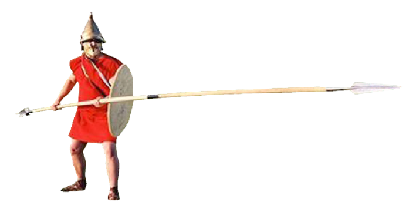
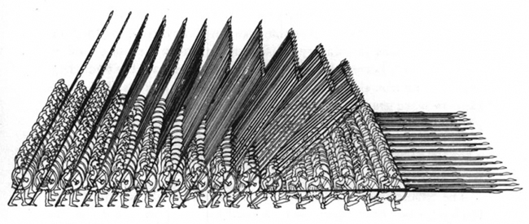
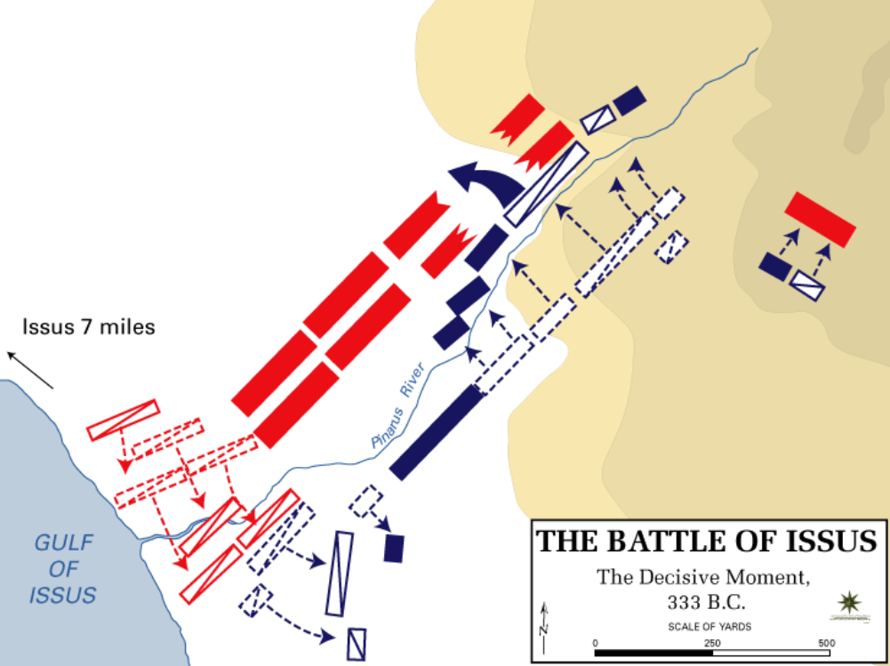
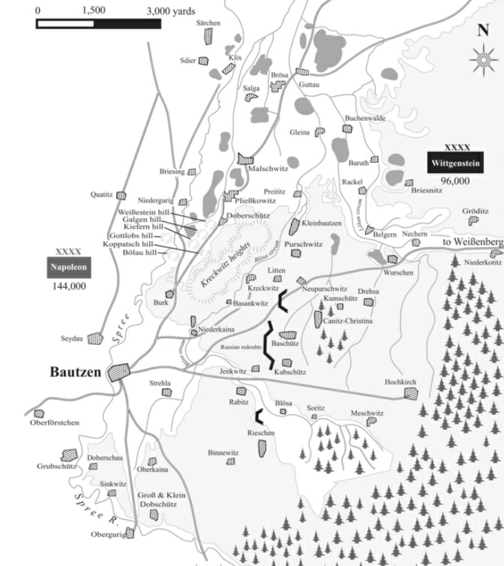
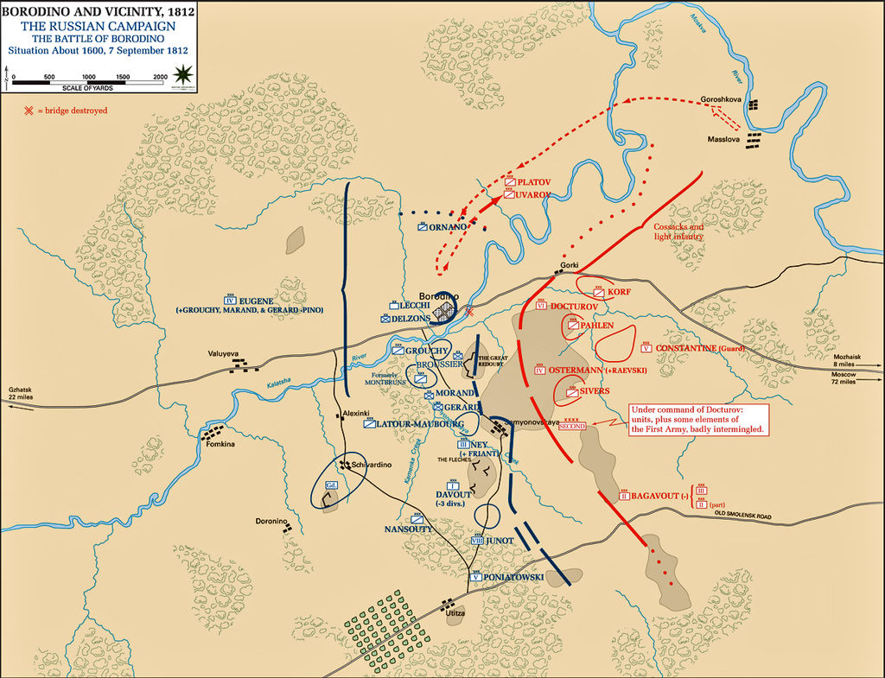

바우첸 전투 (0) - 복습편 : 짜르와 총사령관
게시: 2023-04-03T06:30:15+09:00
이제 1813년 5월 20일, 바우첸 전투 당일 새벽이 되었으니 여기서 잠깐 복습을 하겠습니다. 바우첸 전투는 크게 보면 나폴레옹이 커다랗게 그린 그림에 연합군이 말려들어 벌어진 싸움이었습니다. 그리고 나폴레옹이 그린 그림은 크게 2가지 목적을 가지고 있었습니다. 하나는 베를린을 위협하여 프로이센군을 러시아군으로부터 이탈시키려 했던 것이었고, 다른 하나는 그게 제대로 안 될 경우 베를린을 위협하던 네의 병력을 바우첸 뒤쪽에 투입하여 연합군의 퇴로를 끊기 위함이었습니다. 네의 병력을 바우첸 뒤쪽으로 투입하는 것은 어떻게 보면 알렉산드로스 대왕이 즐겨 쓰던 '망치와 모루' 전법이라고 할 수 있었습니다. 나폴레옹이 바우첸 서쪽에서 전선을 형성하고 연합군을 밀어 붙이면서 모루의 역할을 할 때, 북쪽에서 내려온 네가 연합군의 좌익 뒤쪽을 내리치는 망치 역할을 하는 것이었습니다. 나폴레옹이 망치와 모루 작전을 고안한 것은 상황이 불리하다 싶으면 재빨리 후퇴해버리곤 했던 1812년 러시아군의 행태가 바로 지난 달의 뤼첸 전투에서도 재현되었기 때문이었습니다. 이런 식으로는 1812년이 반복될 뿐이었으므로, 나폴레옹은 뭐라도 해봐야 했습니다. 나폴레옹의 목적은 연합군의 후퇴가 아니라 연합군의 궤멸이었습니다. 알렉산드로스 대왕이 망치와 모루 작전을 쓸 수 있었던 것은 마케도니아군은 사릿사(sarissa)라는 4~6m 길이의 장창으로 무장한 밀집 보병대를 주력으로 하지만, 그와 동시에 다른 그리스 군대에는 없던 꽤 강력한 기병대인 '왕의 친우들'이 있었기 때문이었습니다. 기병대는 적이 전방의 모루에 몰두하는 동안 신속하게 적의 등 뒤를 덮칠 수 있었습니다. 그런데 1813년 당시 나폴레옹에게는 기병대가 절대 부족했습니다. 나폴레옹판 망치와 모루 작전이 성공하려면 저 멀리 북쪽 토르가우에서 엘베 강을 건넌 네의 군단이 신속하고도 은밀하게 바우첸의 연합군 진영 우익 뒤쪽으로 이동할 수 있어야 했습니다. 그러나 네의 군단들도 그저 대부분 신병들로 이루어진 평범하고 지친 보병들일 뿐, 기병대와 같은 속도를 낼 수는 없었습니다.

(사리사(sarissa)는 중부 유럽과 소아시아에 걸쳐 자라는 매우 단단하고 무거운 재질의 코넬(cornel) 나무로 만들어진 장창입니다. 원래 코넬 나무토막은 물에 넣어도 뜨지 않고 가라앉을 정도로 무겁다고 합니다. 사리사의 길이는 4~6m에 무게도 무거워 5~6kg에 달했습니다. 탄창을 끼우지 않은 K-2 소총의 무게가 약 3.3kg이니까 굉장한 무게인 셈이지요. 이렇게 긴 장창은 당연히 한 토막의 나무로 만들 수가 없어서 보통은 2개의 창자루를 중간의 청동제 조임쇠로 연결하여 만들었고, 행군 시에는 분리한 상태로 등에 매고 다녔습니다. 이렇게 길고 무거운 장창은 당연히 두 손으로 들었고, 그로 인해 마케도니아 보병은 당시 그리스 군대의 큰 방패 호플론(hoplon)과는 달리 어깨를 가릴 정도의 작은 방패를 목에 거는 식으로 소지해야 했습니다.)

(알렉산드로스 대왕은 기병을 중시했지만, 그의 기병대가 활약할 수 있었던 것은 마케도니아의 밀집보병대인 팔랑스(phalanx)가 모루 역할을 완벽하게 해준 덕분이었습니다. 마케도니아 보병은 갑옷과 방패가 취약한 편이었지만, 밀집대오의 뒤쪽에서 비스듬하게 쳐들어준 긴 장창의 빽빽한 숲이 의외로 적의 화살을 꽤 효과적으로 막아주었다고 합니다.)

(알렉산드로스 대왕의 대표적 승리인 BC 333년 잇수스(Issus) 전투입니다. 위쪽이 페르시아군, 아래쪽이 마케도니아군입니다. 망치와 모루라는 이름만 들으면 적군을 앞뒤로 완전히 포위하는 것처럼 들리지만 당연히 그런 경우는 흔치 않고, 잇수스 전투에서도 마케도니아군의 기병대가 페르시아군의 우익을 돌파하고 중앙 쪽으로 말아올리는 형태로 전개되었습니다.) 따라서 네의 군단들이 연합군 우익 뒤쪽으로 접근할 때까지 나폴레옹은 어떻게든 바우첸의 연합군을 붙들어 놓아야 했고, 또 그들이 서쪽만 바라보도록 해야 했습니다. 그러나 이건 나폴레옹으로서도 딱히 방법이 없었습니다. 그는 그저 막도날, 베르트랑, 마르몽의 군단들을 바우첸 서쪽에 바싹 붙여놓고 연합군의 신경을 거슬리도록 하면서, 특히 우디노의 군단을 최남단, 즉 연합군의 좌익 쪽에 배치하며 그쪽의 코삭들을 사전에 제거하도록 하여 마치 연합군 좌익을 노리는 것처럼 위장하는 것 외에는 할 수 있는 것이 별로 많지 않았습니다. 이런 준비 작업은 나폴레옹으로서도 꽤 위험한 것이었습니다. 상당수의 병력을 네에게 갈라준 것은 스스로 병력을 분산시킨 것이니, 네가 합류하기 전에 연합군이 코 앞에 늘어선 나폴레옹의 본진을 들이치면 나폴레옹이 꼭 이긴다는 보장이 없었습니다. 게다가 북쪽에서 느릿느릿 내려오는 네의 움직임은 코삭 기병들의 활발한 정찰 활동 때문에 언제든 연합군에게 발각될 수 있었습니다. 실제로 네의 전위 부대인 로리스통의 제5 군단은 연합군에게 포착되었고, 바클레이가 이끄는 2만3천의 병력이 북진하여 로리스통에게 선제 공격을 가하는 사태가 벌어지기도 했습니다. 그러나 결과적으로 5월 20일 새벽, 비록 완벽하지는 않더라도 모든 것은 나폴레옹의 뜻대로 이루어졌습니다. 근 1주일 간 연합군은 분산된 채 코 앞에 포진한 프랑스군에 대해 아무런 공격을 가하지 않고 유순한 양처럼 그저 기다리기만 했습니다. 네의 제3 군단은 이제 하루 행군 거리 밖까지 접근했고, 연합군은 아직도 네의 존재를 모르고 있었습니다. 결정적인 것은, 너무나 뻔해서 오히려 역효과를 내지 않을까 싶었던 나폴레옹의 속임수가 제대로 먹혔다는 것입니다. 즉 연합군은 나폴레옹의 주공 방향이 연합군 좌익을 향하고 있으며 나폴레옹의 목적은 남쪽 오스트리아와의 국경으로부터 연합군을 멀리 밀어내는 것이라고 믿고 있었습니다. '베를린을 위협하여 프로이센의 이탈을 유도한다'는 회심의 계책이 실패하고 괜히 병력만 분산시킨 셈이 되었던 신세의 나폴레옹이 기병 부족이라는 치명적 약점에도 불구하고 이렇게 상황을 성공 일보직전까지 끌고 올 수 있었던 것은 사실 나폴레옹의 재주라기 보다는 연합군의 총지휘관의 미련함 덕분이었습니다. 여기서 연합군 총지휘관이란 바지 사장인 비트겐슈타인이 아니라 실질적인 오너였던 러시아의 짜르, 알렉산드르 1세를 말하는 것이었습니다. 그는 1812년 때부터 군의 지휘에 간섭하기를 좋아하며 상황을 악화시킨 바 있었는데, 그 버릇을 아직도 고치지 못하고 여전히 기회가 있을 때마다, 아니 기회를 억지로 만들어 가며 때를 가리지 않고 비트겐슈타인의 지휘권을 침해했습니다. 어쩌면 애초에 군내 서열이 낮은 편이었던 비트겐슈타인을 파격적으로 총사령관으로 임명했던 이유가, 자기가 더 자유롭게 군 지휘권에 간섭하기 위해서였을 수도 있습니다. 짜르 본인에게도 굽히지 않던 쿠투조프에게 밀려 찌그러져야 했던 알렉산드르는 일부러 약간 우유부단한 성격에 낮은 서열이라는 핸디캡을 안고 있던 비트겐슈타인을 골랐던 모양입니다. 특히 군내 서열 1,2위를 다투던 1812년의 총사령관 바클레이가 바우첸 진영에 합류하자 비트겐슈타인의 위치는 더욱 흔들렸고, 알렉산드르는 그런 상황을 마음껏 즐기며 작전 회의를 사실상 주도했습니다. 연합군 수뇌부가 나폴레옹의 주공 방향은 연합군 좌익이라고 판단한 것도 사실상 알렉산드르가 주도한 것이었습니다.

(1813년 5월 19일, 바우첸 전투 직전의 상황입니다. 당시 프랑스군은 슈프레(Spree) 강을 건너지 않은 상태였습니다. 저 지도 위쪽에 브뢰사(Brösa)가 보이는데, 거기가 원래 나폴레옹이 네에게 21일까지 도착하라고 한 위치입니다. 그러나 문제의 핵심이 되는 위치는 그 아래 쪽의 프라이티츠(Preititz)가 됩니다.) 당시 연합군의 배열은 오로지 서쪽 나폴레옹 본진에 대해서만 대응하느라 너무 길게 늘어졌다는 문제가 있었습니다. 주어진 병력은 뻔한데 전선만 자꾸 늘어지면 당장 전선에 배치할 병력 부족도 문제였지만, 더 큰 문제가 생겼습니다. 바로 예비병력의 운용이었습니다. 나폴레옹 시대의 전술 핵심은 바로 예비병력의 적절한 투입이었습니다. 나폴레옹 전쟁 초기에는 하나의 전투에 양측 합계 2~3만이 싸우는 것이 보통이었고 5만을 넘기는 경우가 많지 않았습니다만, 후기로 갈 수록 전투 규모가 점점 커져서 하나의 전투에 참전하는 양측 병력이 10만을 넘어 20만이 넘기도 했습니다. 그렇게 전장이 넓어지고 참전 인원이 많아질 수록 긴 전선 어디에선가 구멍이 뚫리기 마련이었고, 바로 그 구멍에 시의적절하게 예비병력을 투입하여 승기를 굳히거나, 반대로 그 구멍을 틀어막는 것이 총사령관이 해야 할 일이었습니다. 그런데 바우첸에서의 연합군 전선은 남북으로 너무 길게 늘어지다보니 예비병력 확보가 쉽지 않았는데, 그나마 확보한 예비병력을 알렉산드르는 나폴레옹의 주공 방향이라고 믿었던 좌익에 집중 배치했습니다. 비트겐슈타인도 나폴레옹의 주공 방향은 연합군 좌익일 것이라는 것에 동의했지만, 이렇게 예비병력을 좌익쪽에 집중 배치하는 것은 반대했습니다. 그러나 누구도 총사령관의 말에 귀를 기울이지 않았습니다. 이렇게 짜르에게 계속 무시당하던 비트겐슈타인은 그런 상황이 지긋지긋했는지 19일 낮을 나무 그늘 아래에서의 낮잠으로 보냈습니다.

(1812년 9월 7일, 모스크바 서쪽에서 벌어진 보로디노 전투입니다. 러시아군 우익에 다부와 네가 뚫어놓은 구멍을 통해 예비대로 두고 있던 근위대 투입을 해야 할 순간에, 나폴레옹이 저 북쪽에서 난입했다 돌아간 플라토프와 우바로프의 코삭 기병대의 위협에 놀라 근위대 투입을 망설이지 않았다면, 어쩌면 나폴레옹이 러시아 정복을 성공했을까요?) 그리고 이제 20일 아침이 되었습니다. Source : The Life of Napoleon Bonaparte, by William Milligan Sloane Napoleon and the Struggle for Germany, by Leggiere, Michael V
https://en.wikipedia.org/wiki/Sarissa https://ancientwarfare97a.wordpress.com/sarissa http://www.militarydespatches.co.za/page22.html https://en.wikipedia.org/wiki/Battle_of_Issus https://en.wikipedia.org/wiki/Battle_of_Borodino